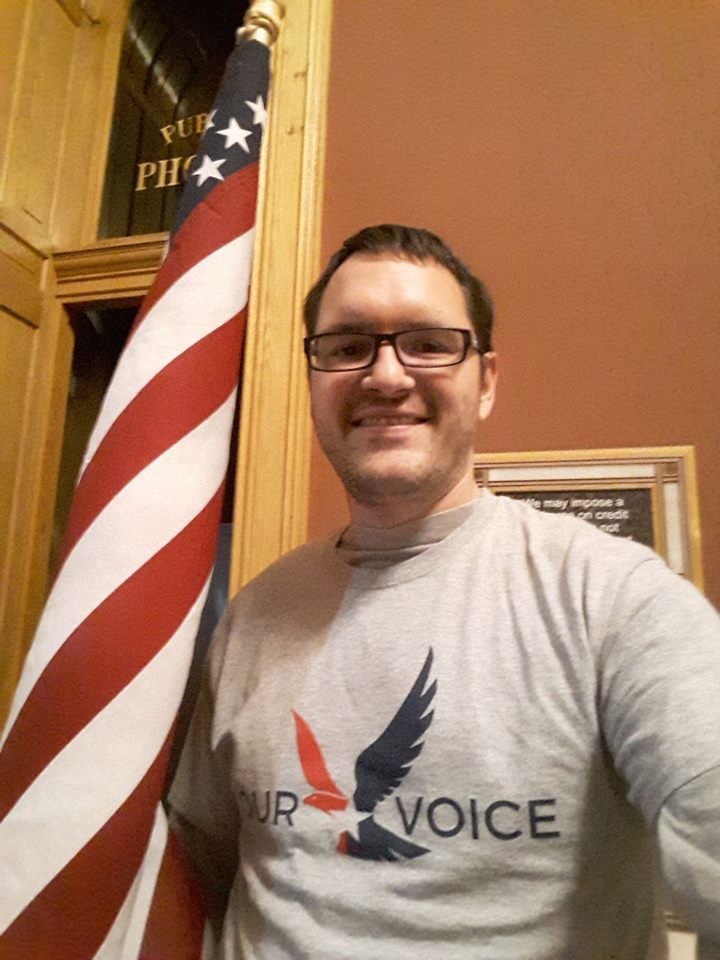

and almost a decade in the medical field.
I was honorably discharged after two combat tours
and four years in the Army as a combat medic , where I was
deployed to, or visited during deployment: Kosovo, Macedonia, Bulgaria,
Kuwait, Iraq, Qatar, UAE, Germany and Ireland.

I haven vast experience in various different scopes, from
the fields in Utah, Wyoming and Colorado,

May name is Joshua Cameron.I have experience in over the road trucking,
I have vast experience working in stressful conditions while keeping my head.
I also have a long history of volunteerism, from 5k runs for charity, security for civilian
events while I was a soldier, and now I am a precinct chair for one of the major political
parties here in Utah. I have volunteered to speak at many events and rallies, where I try
to add energy to the crowd and use my time and skills to add a net positive value to the lives
of Utahns, and indirectly, Americans at large.